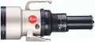

器材库 > 35mm画幅MF定焦镜头 > R 800/5.6 APO-Telyt

详细规格
发布日期
未知
焦距
800mm
最大光圈
f/5.6
最小光圈
f/22
视角（对角）
3.10
镜头结构
11片/8组
镜头卡口
Leica R
防抖
否
颜色
黑色, 白色
尺寸
157X442mm
重量
6200g
备注
滤镜:系列6
安然踏步2014-09-16 23:175 分
操作性 5.00耐用性 5.00性价比 5.00解像力 5.00色彩还原 5.00机械结构 5.00
jtyork2011-09-13 19:04
产品图 / 样片
徕卡 R 800/5.6 APO-Telyt
评测 / 相关文章
该产品暂无存档的评测文章